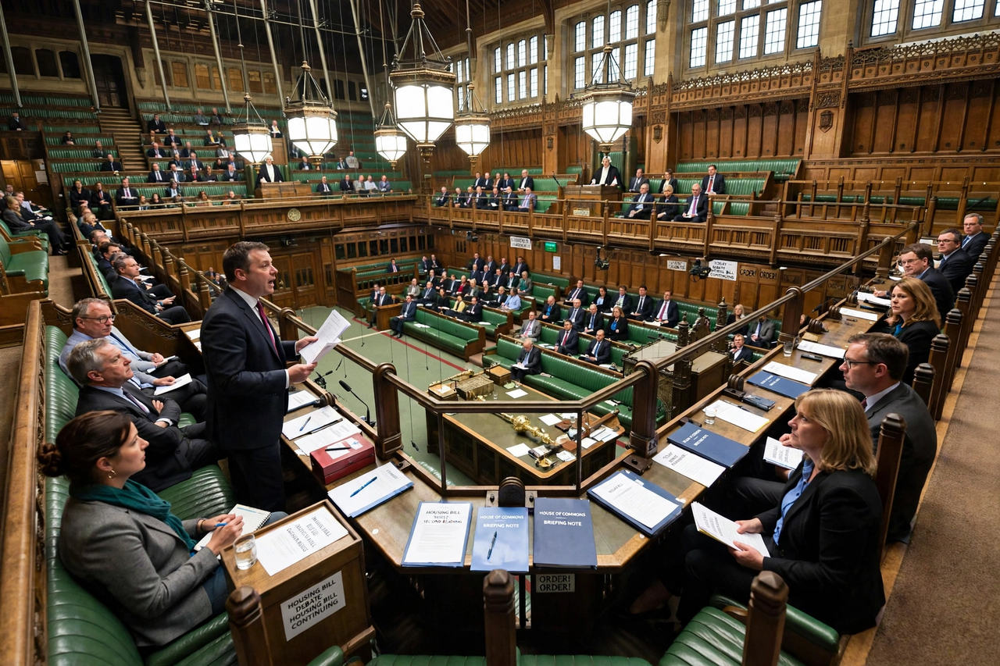

Ministerial and other Salaries Act 1975

The Ministerial and other Salaries Act 1975 (c. 27) is an Act of the Parliament of the United Kingdom that consolidated the law governing the salaries paid to government ministers, the Leader of the Opposition, the Speaker, and other office-holders, and limits the number of ministers who may receive salaries. It remains the principal statute underpinning the payment of ministerial salaries in the United Kingdom.
| Citation | 1975 c. 27 |
|---|---|
| Royal assent | 8 May 1975 |
| Status | Amended; in force |
Provisions
The Act sets out, in its schedules, maximum salaries payable to holders of specified ministerial offices — from the Prime Minister and Cabinet ministers down to junior ministers, government whips and the Law Officers — and provides that actual amounts may be set by Order in Council up to those maxima. Because the schedules' figures have been overtaken by inflation, in practice the operative amounts are determined by orders made under the Act, usually following reviews of parliamentary pay.
Crucially, the Act caps the number of paid ministerial posts. The total number of ministers entitled to a salary is limited (to 109 under the present arrangements, including whips), and the Act interacts with the House of Commons Disqualification Act 1975, which limits to 95 the number of ministers who may sit and vote in the Commons. These limits matter politically: they constrain the size of the "payroll vote" of MPs bound by collective responsibility to support the government.
Offices covered
Besides ministers, the Act provides salaries for the Leader of the Opposition in each House, the Speaker of the House of Commons and the Lord Speaker, deputy speakers, and the leaders and chief whips of opposition parties in the Lords. Opposition "Short Money" for the Commons is authorised under separate resolutions of the House rather than this Act.
Amendments
The Act has been amended many times to adjust the caps and the lists of offices, including changes following devolution and the creation of new departments. In 2011, responsibility for MPs' own salaries and expenses moved to the Independent Parliamentary Standards Authority under the Parliamentary Standards Act 2009, but ministerial salaries — paid in addition to the MP salary for those in the Commons — remain governed by the 1975 Act framework.